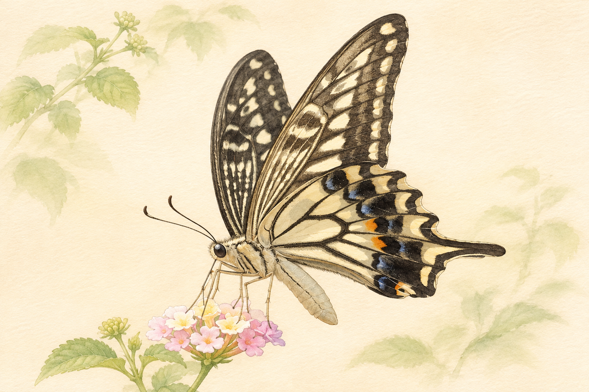

SPECIES RECORD / Z002-001
এশীয় সোয়ালো-টেল
Papilio xuthus
アゲハ（ナミアゲハ）
হালকা হলুদ ডানায় কালো রেখা এবং পেছনের ডানায় লেজের মতো অংশ থাকে। মানুষের বসতির কাছেও দেখা যায়।
- পরিবার
- Papilionidae
- পাঠযোগ্য গোষ্ঠী
- সোয়ালো-টেল পরিবার
- যাচাই
- 2026-11-10

পুরুষ ও স্ত্রীর পার্থক্য
মূল নকশা স্ত্রী-পুরুষে কাছাকাছি। শুধু রঙ নয়, উদরের শেষভাগের গঠনও দেখুন।
আকার
সামনের এক ডানার দৈর্ঘ্য 35–60 mm; সাধারণ নির্দেশক, শুধু ওকিনাওয়ার নমুনার পরিসর নয়।
ওকিনাওয়ার দ্বীপ ও রেকর্ড
স্থানীয় সূত্রে উল্লিখিত দ্বীপের রেকর্ড নিচের সূত্রে দেখুন। ওকিনাওয়া মূল দ্বীপ, মিয়াকো ও ইয়ায়েয়ামাসহ বহু দ্বীপের বাগান, চাষের জমি ও বনপ্রান্ত।
পছন্দের পরিবেশ
বাগান, সমতলের ক্ষেত ও লেবুগাছযুক্ত বনপ্রান্ত।
অতিরিক্ত তথ্য ও রেকর্ডের ব্যাখ্যা
Papilio machaon থেকে আলাদা করতে সামনের ডানার গোড়ার নকশাও দেখুন; শুধু হলুদের গাঢ়ত্ব যথেষ্ট নয়।
শূককীট ও খাদ্যগাছ
শূককীট লেবুজাতীয় ও অন্যান্য Rutaceae উদ্ভিদের পাতা খায়। ছোট অবস্থায় পাখির বিষ্ঠার মতো, পরে সবুজ হয়।


তথ্যসূত্র ও ওয়েবসাইট
- 沖縄蝶類生態図鑑：アゲハ（ナミアゲハ） (2026-11-10)
- 形態・大きさの補足資料 (2026-11-10)
তথ্যভান্ডার ব্যবহার করুন
একই তথ্য SQLite, Excel-এ খোলা যায় এমন UTF-8 CSV, JSON ও সাধারণ টেক্সটে সংরক্ষিত। সূত্র এবং ছবির কৃতিত্বও আলাদা রাখা হয়েছে।